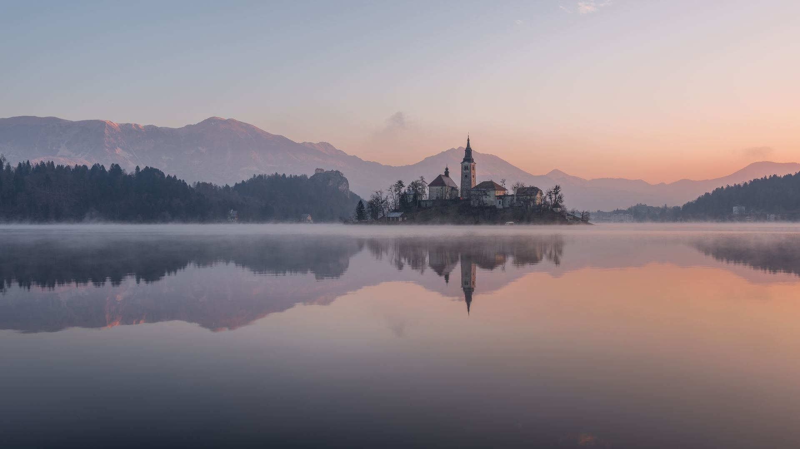
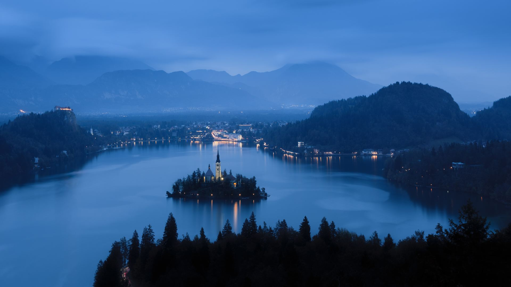
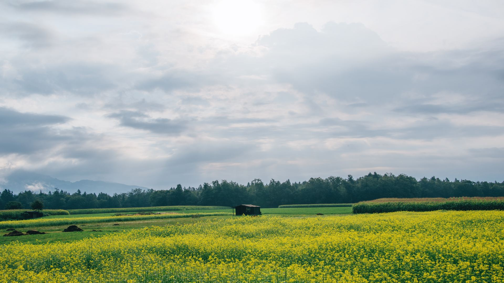
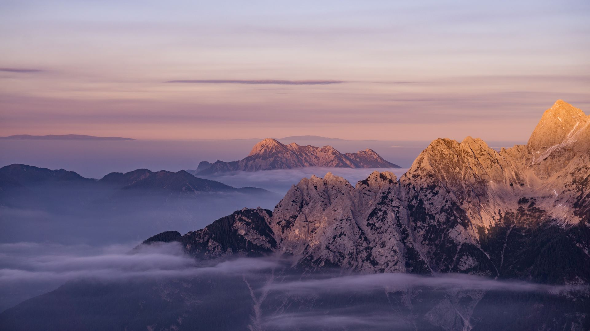
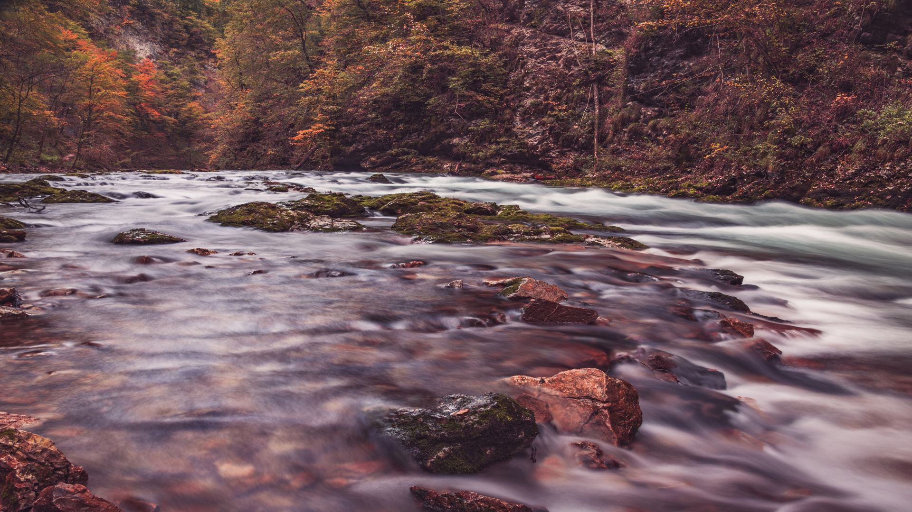
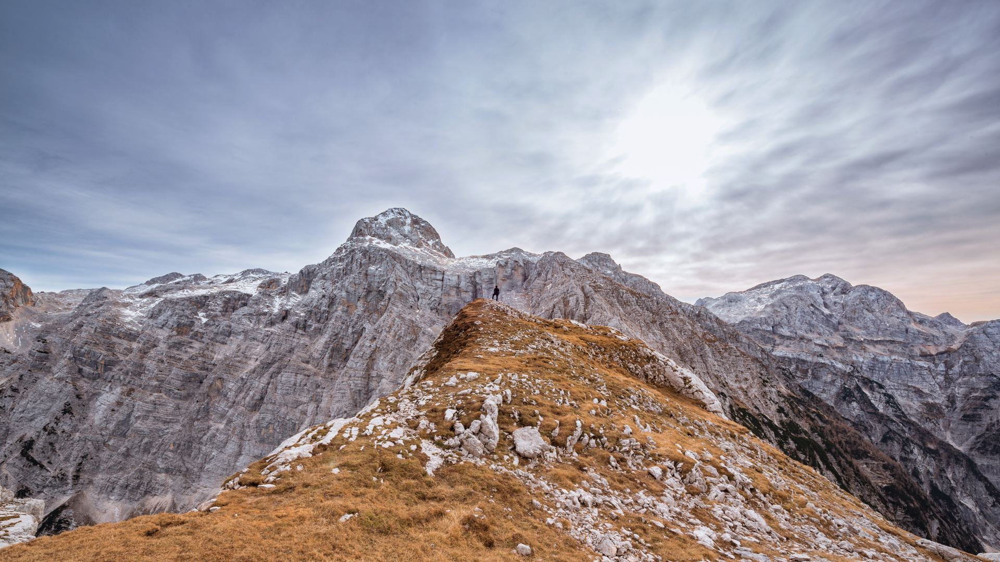
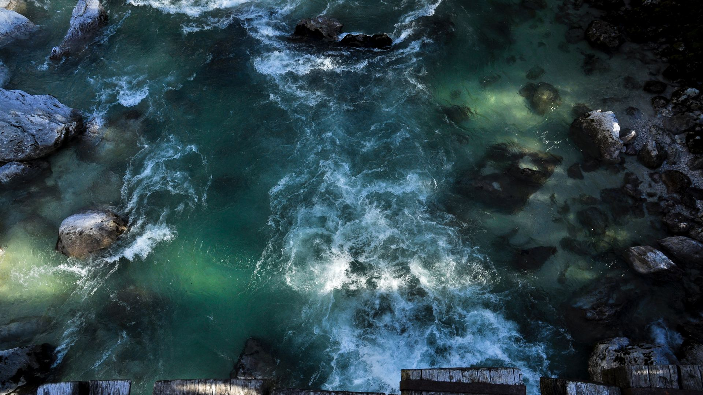
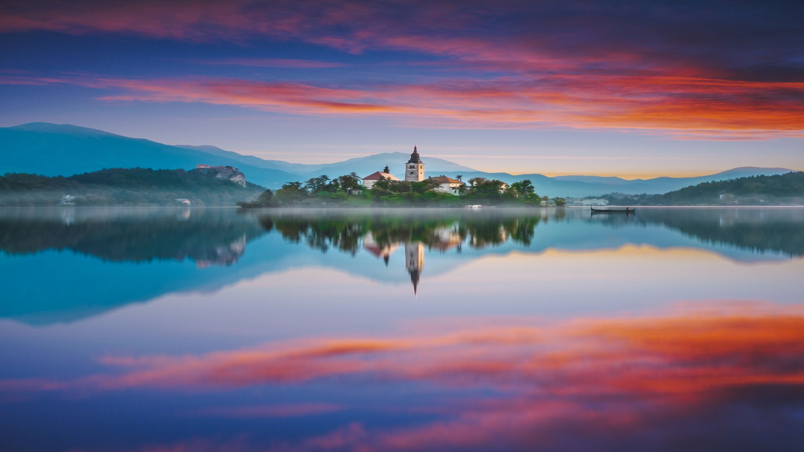
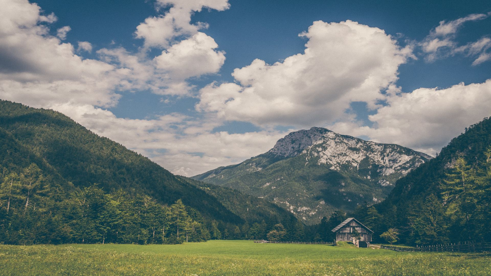
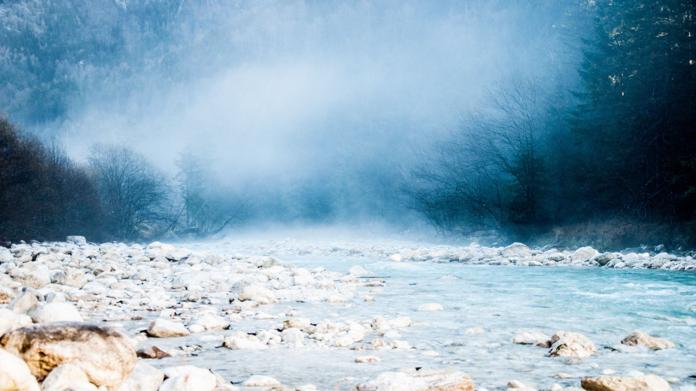

Любляна. Словения
Любляна. Словения
Любляна. Словения
Основные эмоции, остающиеся в памяти туристов, впервые посетивших Любляну – уют и обаяние. Вроде, ничего сверхъестественного, а вроде и незабываемо.
Начало пути лежит на набережной реки Любляница. Знаменитые «три моста», площадь Прешерна, старый
рынок, пешеходные улицы. Затем подъем на фуникулере или пешком в замок, бывший основой города. Внутри можно взять экскурсию или просто побродить.
После осмотра замка Вы направляетесь…… в тюрьму. Я не шучу. Бывшее здание тюрьмы превращено в
хостел и центр неформального искусства. Сосредоточение граффити, различных скульптур и всевозможного стрит-арта. В Любляне много молодежи, ведь здесь расположен самый крупный университет. Словенское образование, в Европе котируется высоко. Многие
итальянцы предпочитают учиться в Словении, а не у себя на родине.
В окончание рекомендую поездку на небольшом пароходике и отличные виды вечернего города. Кстати, по легенде, именно здесь проплывал, с аргонавтами Ясон, укравший Золотое Руно.
Более того, он считается основателем города, после того, как на берегах Любляницы победил страшного дракона, который стал символом столицы Словении.
По желанию можно внести коррективы в маршрут с заглянуть в музей Этнографии или Национальный
Художественный музей. Детям особенно интересен зоопарк, но нужно иметь ввиду, что он достаточно большой, и организован по принципу свободных вольеров, а не клеток, поэтому даже беглый осмотр займет 2-3 часа.
По мере движения Вам, встретятся
всякие приятные мелочи, вроде магазинчиков с местным черничным ликером, кондитерские с разными вкусняшками и т.п.
Словения
Словения
Словения
Словения
Проведя полдня на термальном курорте Словении Вы прибавите себе полгода жизни.
Термы – одна из фишек Словении. Самые старые, были основаны еще во времена Римской Империи. Сюда съезжаются со всей Европы, а для самих словенцев это священный ритуал.
Лечение минеральными водами поставлено здесь на широкую ногу. Наиболее известны спа-курорты: «Рогашка Слатина», «Терме 3000», «Римске Топлице», «Чатеж».
Именно на курорте Рогашка расположен отель «Донат», а одноименная минеральная вода, разливающаяся
здесь, продается практически во многих магазинах России.
Любой подобный курорт, это комплекс бассейнов и ванн с различными видами минеральной воды, которая поступает из источника прямо здесь же. Вам обязательно предложат ванны с разной температурой,
десяток видов гидромассажа, бани, сауны.
Правда, есть один тонкий момент. В банях демократия достигла небывалых высот. И делать отдельно мужские, женские или детские отделения никто не собирается. Также Вам вполне могут запретить носить купальник
или плавки, и стянут с Вас трусы не особо церемонясь.
Дополнительные расходы
Словения
Словения
Словения
Благодаря фантастической красоте, озеро Блед является символом Словении. Чистота Альпийских озер кажется нереальной.Проплывая на лодке видишь весьма крупных рыбин, плывущих внизу.
А еще лебеди. Они повсюду. Правда, эти элегантные на воде птички,
на берегу отнюдь не так прекрасны. Их поведение отличается агрессивным попрошайничеством, что при наличии внушительного клюва, служит убедительным доводом к тому, чтобы отдать им последнюю булку.
Начнем экскурсию с обзорной поездки. Затем
на лодке, напоминающей венецианские гондолы, Вы отправитесь на одноименный остров, где расположена церковь Успения и звонница. По преданию, если позвонить в ее колокол, Ваше самое заветное желание обязательно сбудется.
Разумеется, в озере
можно купаться. Но только самым смелым, так как температура воды даже летом редко поднимается выше 16-17 градусов.
По возвращению, мы поднимемся в средневековый Бледский замок. Внутри размещена экспозиция убранства и оружия, есть музеи истории
типографии, и монастырского вина. В первом Вы сможете сами напечатать открытку по старинным технологиям, а во втором, разлить вино и запаять его сургучной пробкой. Все это произойдет под чутким руководством пузатого монаха.
На обед предлагаю
попробовать форель, выращенную тут же в проточных водах, но можно обойтись и более демократичными вариантами.
Затем мы переместимся к каньону Винтгар. Это место оставляет неизгладимое впечатление. Вы пройдете по деревянным мосткам около двух
километров. А весь путь, идет вдоль отвесной скалы над протекающей в ущелье рекой.
Дополнительные расходы
Словения
Словения
Словения
Словения
Словения
В 30 минутах езды от Бледа лежит, не менее красивое, озеро Бохинь. В переводе название означает – место Бога. Цивилизация не тронула эти края. Здесь нет пафоса, казино, дорогих магазинов и ресторанов, которых полно в Бледе.
Неподалеку разместились
три деревни, между которыми курсирует небольшой пароходик. Проехаться на нем нужно обязательно. Рядом фуникулер, ведущий на вершину горы Вогель. Вид, открывающийся с верхней точки (1600 метров) совершенно фантастический.
Затем Вы пройдете
пару километров через национальный парк Триглав и окажетесь возле водопада Савица. Скорость передвижения на маршруте, как обычно выбираете Вы, но если поспешить, то вполне можно успеть заехать еще в одно классное местечко — город Толмин, стоящий
на реке Соча.
Эта горная речка имеет удивительный изумрудный цвет. Киношники разных стран давно облюбовали эти края. Например, студия Диснея снимала здесь вторую серию фильма «Хроники Нарнии. Принц Каспиан».
Если на осмотр Альп добавить
один день можно посмотреть на самый мощный водопад Словении Бока и добраться до долины Триглавских озер. Смельчаки могут подняться на Триглав – высшую точку Словении 2864 метра, но это совсем отдельная история. Восхождение на Триглав, по стандартным
меркам трекинга, классифицируется как «очень сложное».
Дополнительные расходы
Словения
Словения
Словения
Словения
Это место, что называется, must see. 30 миллионов человек ошибаться не могут. Столько посетителей побывало здесь за 200 лет с момента открытия этих пещер.
Постойнска Яма — наиболее изученный в мире комплекс карстовых образований и самая посещаемая пещера в Европе. Общая протяженность тоннелей более 20 километров.
Ускорить передвижение туристов позволяет электропоезд. Вы попадете в огромные залы размером с футбольное поле, узкие коридоры и подсвеченные галереи со сталактитами и сталагмитами. Иногда здесь проводят оперные концерты таких звезд как Пласидо
Доминго.
В специальных бассейнах и аквариумах можно посмотреть на живых существ, никогда не видевших света. Честно скажу, не очень симпатичные создания.
Затем мы поедем в 700 летний Предъямский замок, частично вырубленный в скале. Внутри, как обычно, образцы оружия, утвари, охотничьих трофеев и возможность увидеть, как жили или умирали владельцы подобных жилищ. Сам замок неоднократно попадал
в поле зрения режиссеров Голливуда, и использовался для съемок. br
Дополнительные расходы
Словения
Словения
Словения
Словения
На вопрос «что посмотреть в Словении» я всегда говорю, что нельзя ограничиваться самыми известными местами.
Шкоцъянская пещера отличается от пейзажей Постойнской Ямы. Во-первых, подземная часть иногда напоминает декорации фильмов типа Властелин
колец или Индиана Джонс. А во-вторых, после пещеры Вас ждет путь по скалистому заповеднику, вдоль русла реки с необычным названием Река, водопадами и потрясающими видами.
После Шкоцьянскй долины, можно посетить конный завод Липица. Жеребцы
липицанской породы поставляются к королевскому двору Австрии, начиная с 16 века. Точно неизвестно, но вероятно это самый старый конезавод в мире.
Если лошадки вас не прельщают, день можно завершить подъемом к замку Соцерб, расположенному на
обрыве скалы.Замок небольшой, но очень древний. Основан еще в 13 веке и затем несколько раз перестраивался венецианцами. Сейчас в нем находится один из лучших рыбныхресторанов на побережье.
Дополнительные расходы
Словения
Словения
Словения
Словения
Отдых на море, в Европе, может быть не только недорогим, но и интересным.
Старт экскурсии в Копере. Как и остальные прибрежные города Словении, он был основан венецианской республикой, и несет в себе элементы их архитектуры. Башня центрального
собора св. Марии, площадь, окруженная узкими улочками и дворец Лоджии, старинный фонтан и особую форму окон.
Следующий пункт Изола. Много веков назад поселение было островом и соединялось с материком каменным мостом. За время существования
он находился под управлением совершенно различных наций и культур и впитал в себя их разнообразие. На набережной, как обычно, множество отличных ресторанчиков. Здесь можно попробовать все что плавает в море и всеми возможными способами приготовления.
На десерт останется жемчужина адриатического побережья Словении — Пиран. Городок можно обойти минут за 30. Но гулять здесь хочется бесконечно. Пиран выдается острым мысом в море. С этой точки видны две противоположные стороны города.Над Пираном
стоит отлично сохранившаяся крепость, в которую мы обязательно поднимемся.
Если Вы отдыхаете с детьми Аквапарк в городе Пореч (Хорватия) несомненно порадует их. Время на дорогу не более часа.